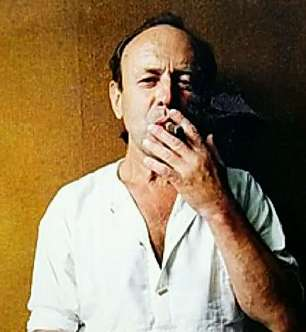

СВОБОДА. ДОРОГО
Годовщина экзистенциального прыжка Станислава Курилова (1936 — 1998), чью автобиографическую книгу «Побег» я в свое время прочитал с восхищением перед неудержимой жаждой свободы, владевшей этим фантастическим человеком.
Он родился и вырос в большой клетке под названием СССР. Летать разрешалось только внутри этого вольера, да и то без нарушения паспортной прописки. А Станислав Курилов был птицей вольной, не признававшей решеток.
Жили в Советском Союзе и такие особи, немногочисленные. Люди, готовые идти на риск и платить высокую цену за свободу. Какими только способами не пытались эти вольнолюбцы вырваться за железный занавес! Но Курилов совершил нечто совершенно невероятное.
Он мечтал увидеть большой мир, но «инстанции» не давали выездной визы. Тогда «невыездной» советский гражданин подготовил заграничное путешествие по собственному сценарию.
В удивительной стране существовал странный теплоходный круиз по Тихому океану — до экватора и обратно без захода в иностранные порты (вдруг кто-нибудь из пассажиров сбежит?). Курилов купил билет и 13 декабря 1974 года, ночью, у филиппинских берегов, сиганул с высотищи в океан. «У берегов» — понятие относительное. Предстояло проплыть, борясь с течениями, около 100 (ста) километров. У Станислава были ласты, маска и трубка. Плыл он трое суток. И в конце концов доплыл.
А потом жил на свободе где ему нравилось и так, как хотел. Чего я вам всем и желаю. Хорошо бы без прыжков за борт, но, если по-другому никак не получается, прыгайте. Оно того стоит.